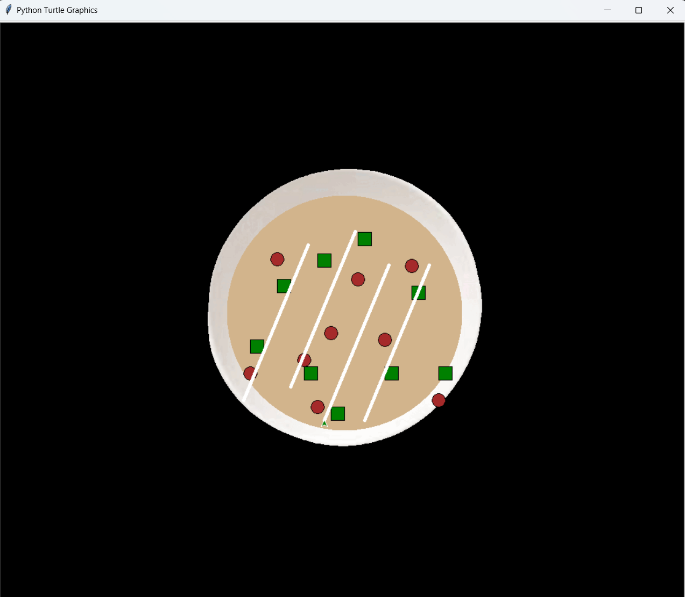
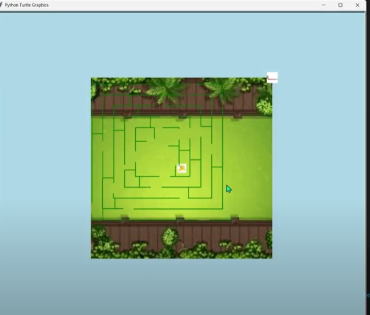
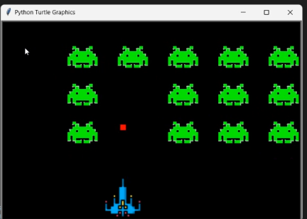
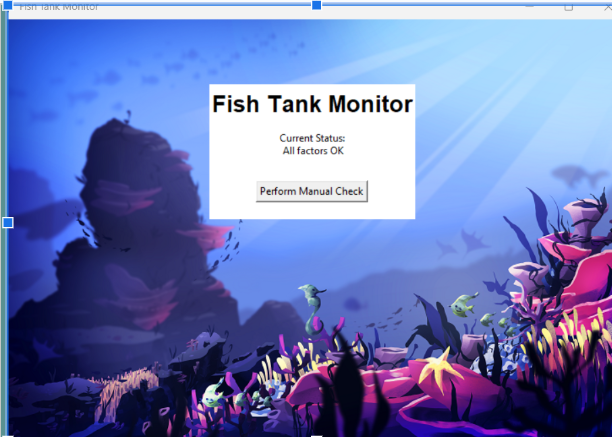
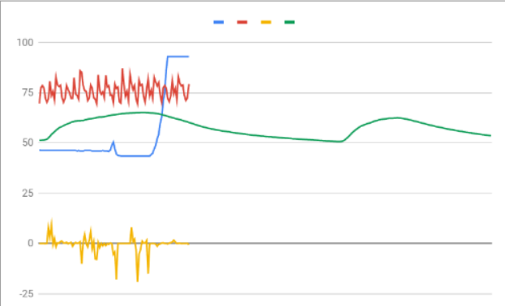

Home
Portfolio
About Me
This is my Portfolio Page!

We created this chipotle bowl project for the 1.1.9 project. In this project there are five questions about their toppings, Rice, Beans, Chicken/vegetables, Sour cream, and guac. The user decided what they want and then the turtle draws whatever the user wants. We also have an image of the plate as the background.

In this project we made a maze a bird and a worm. The point of the game is for hte user to traverse the maze and reach the worm in the least amount of time. There is a leaderboard and background.

In this project we made space invaders, this is a game where you play as a space ship and you shoot bullets at enemies and destroy the space ship there is a backgroud, player movement, enemy movement, bullets, and more.
In this project we made a game called slime attack, in thise game slime come from the four sides and your a ninja and have to attack the slimes with arrows keys. theres difficulty ramping, input, sounds and its actuallly pretty hard in the endgame due to the speed. My best is 204.

In this project we took a look at a buggy fish tank code and we fixed it. There was 3 bugs one in alkalinity module one in temperature module and one in magnesium module. They were all easy fixed. We also look at email logs to find an security breach and we decoded some code.


In this project we have a clumped data of four sensors and we have to figure out which data is from which censor and where the rover landed in. We think that the rover landed in the rocky mountains. The yellow graph we think repreent the light sensor because its high and randomly, quickly drops just like the description. Next we think that the green graph is the sound detecor, its smooth not very rough or sudden changes just like the wind described. we think the red graph is the gyrscope, it changes very small just the wind detected so it is the gyroscope. Finally the blue graph is temperature since it quickly heats up, which could represent it becoming day time, as pltw describes is the temperature of the rocky mountains.